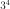

Cheat sheet: Python¶
Ce document résume en quelques pages les éléments essentiels de la syntaxe du langage python. Quelques lignes suffisent pour découvrir la version installée :
<<<
import sys
print(sys.version)
>>>
3.10.12 (main, Jul 29 2024, 16:56:48) [GCC 11.4.0]
Avec la version 3.x, le langage a introduit quelques changements importants qui seront précisés. Il est préférable de choisir la version 3 plutôt que 2.7. Outre le fait qu’elle contient les dernières évolutions, elle est beaucoup plus cohérente en ce qui concerne les chaînes de caractères.
Le langage¶
Quelques rappels sur le langage :
Il n’y a pas de séparateur d’instructions, il faut écrire une instruction par ligne et décaler les lignes dans une boucle, un test, une fonction, une classe. Pour écrire une instruction sur plusieurs lignes, il faut utiliser le caractères \ sur toutes les lignes de l’instruction sauf la dernière. Il ne doit rien y avoir derrière ce caractère, ni espace, ni commentaires. Cette règle n’est nécessaire s’il s’agit d’une liste d’éléments séparés par des virgules.
On peut mettre autant d’espaces qu’on veut. Il peut n’y en avoir aucun sauf derrière une instruction
for,if, …Les commentaires dans un programme commencent par le symbole
#et vont jusqu’à la fin de la ligne.L’instruction
printpermet d’afficher n’importe quelle information. Elle affiche le résultat de la méthode__str__pour les classes. Version 3.x :printest une fonction, tout ce qui doit être affiché doit l’être entre parenthèses.L’instruction
helpaffiche l’aide associée à une variable, une fonction, une classe, une méthode, un module. Pour une fonction, une classe, une méthode du programme, cette aide correspond à une chaîne de caractères encadrée par trois". Ce message d’aide peut s’étaler sur plusieurs lignes.
<<<
def fonction():
"""fonction de
démonstration"""
return 0
help(fonction)
>>>
Help on function fonction in module sphinx_runpython.runpython.sphinx_runpython_extension:
fonction()
fonction de
démonstration
2 astuces en cas de problème
En cas de doute sur une partie de code, un calcul, une priorité entre
opérateurs, le résultat d’une fonction, il est possible d’utiliser
la fonction print pour afficher une valeur intermédiaire pendant un calcul.
Il ne faut pas non plus hésiter à vérifier sur un petit exemple dans
un petit programme que des lignes douteuses font exactement ce pour quoi elles ont été écrites.
Il est souvent utile de chercher sur Internet des exemples de programmes pour corriger une syntaxe incorrecte, utiliser un moteur de recherche en ajoutant une requête commençant par le mot python. Pour les erreurs, il est parfois intéressant de recopier intégralement le message d’erreur sur un moteur de recherche, les réponses obtenues sont souvent assez claires.
Les variables¶
Le nom d’une variable commence par une lettre ou un blanc souligné,
il peut également inclure par la suite des chiffres. Python distingue les
minuscules des majuscules. La portée d’une variable, c’est-à-dire la portion
de code où elle définie, s’étend depuis sa déclaration (première affectation)
jusqu’à la fin du programme ou de la fonction où elle est définie.
Pour déclarer une variable portant le nom va, il suffit d’écrire :
va = <valeur>
Le type de <valeur> détermine le type de la variable va.
Si une variable de même portée portait déjà ce nom-là, son contenu
est écrasé (perdu aussi). L’instruction type(x) retourne le type de la variable x.
Un identificateur qu’il désigne une variable,
une fonction, une classe ou un module garde la valeur de sa dernière affectation.
Les types immuables¶
Les variables de type immuable ne peuvent pas être modifiées.
None, ce type veut dire rien, il est utilisé comme convention de programmation pour dire qu’un algorithme, un calcul ne s’est pas terminé correctement ou une valeur n’a pas encore été calculée.bool: un booléen (résultat d’un test)int: un entierfloat: un réelcomplex: un complexestr: une chaîne de caractères ou string, elle apparaît entre guillemets, entre apostrophes, entre trois guillements (""") si elle s’étend sur plusieurs lignes.s = "exemple".tuple: un vecteur d’éléments de types identiques ou différents, il apparaît entre parenthèses, on accède à un de ses éléments à l’aide de crochets. Les éléments d’un t-upletsont indicés de 0 àlen(t)-1inclus.t = () # tuple vide t = (2, "e") # tuple de deux éléments print(t[0]) # affiche le premier élément
L’affectation d’une valeur de type immuable à une variable est une copie.
On peut appliquer sur les types numériques les opérations usuelles
(+ * - / \% ** += *= -= /= \%= **=)
** est le symbole pour puissance : 3 ** 4 = .
On rappelle que a += 10 est équivalent à a = a + 10, ceci signifie que la
valeur de a avant le calcul n’a plus besoin d’exister.
Le et logique et le ou logique sont notés and et or.
Les priorités sont celles usuellement utilisées en mathématique,
en cas de doute, il faut utiliser des parenthèses.
Les opérateurs de comparaison (< > == <= >=) s’appliquent sur tous
les types numériques ainsi que sur les chaînes de caractères.
Rappel : les minuscules sont classées après les majuscules.
<<<
print("A" < "a")
>>>
True
Fréquente source de bug :
une division entière a pour résultat un réel. Autrement dit :
1/2 = 0.5. Pour une division entière, il faut utiliser//:1//2 = 0.
Pour convertir une information d’un type à un autre, il suffit
d’utiliser le nom de ce type suivi de la valeur à convertir
entre parenthèses : b = float ("2.145") équivaut à la
conversion d’une chaîne de caractères en réel.
L’addition d’un t-uple et d’une valeur retourne un t-uple incluant cette valeur à la fin (plus long d’un élément). L’addition de deux t-uples concatène les deux t-uples. L’addition de deux chaînes de caractères retourne leur concaténation.
Pour savoir si un élément x fait partie d’un t-uple t,
il faut utiliser la syntaxe x in t dont la réciproque
est x not in t.
La fonction len
retourne la longueur d’un tuple ou d’une
chaîne de caractères. Les éléments ou les caractères d’un tuple
ou d’une chaîne de caractères t sont indicés de 0 à len (t)-1 inclus.
t[i:j] # correspond à un sous-ensemble allant des indices i à j exclu
t[:j] # = t[0: j]
t[i:] # = t[i: len(t)]
Pour les chaînes de caractères, on utilise fréquemment les méthodes suivantes :
st = "langage python"
st = 'langage python' # idem
st = 'un guillement "' # chaîne contenant un guillement
st = "un guillement \"" # chaîne contenant un guillement, il faut ajouter \
# pour ne pas confondre avec l'autre guillement
st = st.upper() # mise en lettres majuscules
i = st.find("PYTHON") # on cherche "PYTHON" dans st
print(i) # affiche 8
print(st.count("PYTHON")) # affiche 1
print(st.count("PYTHON", 9)) # affiche 0
|
Retourne le nombre d’occurences de la chaîne de caractères |
|
Recherche une chaîne de caractères |
|
Retourne |
|
Retourne |
|
Retourne une copie de la chaîne de caractères en remplaçant toutes les
occurrences de la chaîne |
|
Découpe la chaîne de caractères en se servant de la chaîne |
|
Remplace les minuscules par des majuscules. |
|
Remplace les majuscules par des minuscules. |
|
|
Quelques fonctions s’appliquant aux chaînes de caractères, l’aide associée au langage python fournira la liste complète. Certains des paramètres sont encadrés par des crochets, ceci signifie qu’ils sont facultatifs. L’affichage de réels nécessite parfois de tronquer la partie décimale ce qui est fait grâce à la syntaxe suivante :
<<<
x = 0.123456789
print("%1.2f" % x) # donne 0.12
s = "%2.2e %s" % (3.14159, "est une approximation de pi")
print(s)
>>>
0.12
3.14e+00 est une approximation de pi
Les types modifiables¶
python fournit deux types modifiables : les listes et les dictionnaires. Pour ces deux types, il faut faire attention à chaque affectation.
a = [1,2]
b = a
La seconde ligne ne fait pas une copie de la première liste, elle ne fait que créer un second nom pour nommer la même liste. Pour copier une liste ou un dictionnaire, il faut utiliser :
a = [1,2]
import copy
b = copy.copy(a)
ou, si la liste inclut également d’autres listes ou dictionnaires :
a = [1,2]
import copy
b = copy.deepcopy(a)
Cette remarque s’applique à tout type modifiable, liste, dictionnaire ou tout autre classe. La suppression d’une variable n’implique pas la suppression de toutes les variables se référant à une seule et même instance de classe.
Liste¶
Une liste est une sorte de tableau qui permet de mémoriser un ensemble d’éléments de types variés. C’est une sorte de t-uple modifiable.
x = [4,5] # création d'une liste composée de deux entiers
x = ["un",1,"deux",2] # création d'une liste composée deux chaînes de caractères
# et de deux entiers, l'ordre d'écriture est important
x = [3,] # création d'une liste d'un élément, sans la virgule,
# le résultat reste une liste
x = [ ] # crée une liste vide
x = list() # crée une liste vide
Opérations qu’une liste supporte.
|
vrai si |
|
réciproque de la ligne précédente |
|
concaténation de |
|
concatène |
|
retourne le ième élément de |
|
retourne une liste contenant les éléments de |
|
retourne une liste contenant les éléments de |
|
nombre d’éléments de |
|
plus petit élément de |
|
plus grand élément de |
|
retourne la somme de tous les éléments |
|
supprime les éléments d’indices entre |
|
convertit |
Opérations disponibles sur les listes, identiques à celles des T-uples,
on suppose que l et t sont des listes, i et j sont des entiers.
x est quant à lui quelconque.
|
Retourne le nombre d’occurrences de l’élément |
|
Retourne l’indice de la première occurrence de l’élément |
|
Ajoute l’élément |
|
Ajoute tous les éléments de la liste |
|
Insère l’élément |
|
Supprime la première occurence de l’élément |
|
Retourne l’élément |
|
Retourne la liste, le premier et dernier élément échangent leurs places, le second et l’avant dernier, et ainsi de suite. |
|
Cette fonction trie la liste par ordre croissant. Le paramètre |
Opérations permettant de modifier une liste
on suppose que l est une liste, x est quant à lui quelconque.
Les listes peuvent aussi être définies à partir d’une écriture abrégée :
<<<
li = list(range(0, 5)) # liste des entiers de 0 à 5 exclu
y = [i for i in li if i % 2 == 0] # sélection des éléments pairs
print(y)
z = [i + j for i in li for j in li] # construit tous les nombres i+j possibles
print(z)
>>>
[0, 2, 4]
[0, 1, 2, 3, 4, 1, 2, 3, 4, 5, 2, 3, 4, 5, 6, 3, 4, 5, 6, 7, 4, 5, 6, 7, 8]
Dictionnaire¶
Un dictionnaire est un tableau pour lequel les indices ou clés ne sont pas uniquement des entiers mais tout type non modifiable (le plus souvent un entier, un réel, une chaîne de caractères, un t-uple).
<<<
x = {"cle1": "valeur1", "cle2": "valeur2"}
print(x["cle1"])
x[(0, 1)] = "clé tuple" # ajoute une nouvelle valeur dont la clé est (0,1)
# les parenthèses sont superflues
print(x)
y = {} # crée un dictionnaire vide
z = dict() # crée aussi un dictionnaire vide
>>>
valeur1
{'cle1': 'valeur1', 'cle2': 'valeur2', (0, 1): 'clé tuple'}
Opérations qu’un dictionnaire supporte.
|
vrai si |
|
réciproque de la ligne précédente |
|
retourne l’élément associé à la clé |
|
nombre d’éléments de |
|
plus petite clé |
|
plus grande clé |
|
supprime l’élément associé à la clé |
|
retourne une liste contenant toutes les clés du dictionnaire |
|
convertit |
Opérations disponibles sur les dictionnaires, d est un dictionnaire,
x est quant à lui quelconque.
|
Retourne une copie de |
|
Retourne |
|
Retourne un itérateur parcourant contenant tous les couples (clé, valeur)
inclus dans le dictionnaire. Pour obtenir une liste, il faut écrire
|
|
Retourne un itérateur parcourant toutes les clés du dictionnaire |
|
Retourne un itérateur parcourant toutes les valeurs du dictionnaire |
|
Retourne |
|
Supprime tous les éléments du dictionnaire. |
|
Pour chaque clé de |
|
Retourne |
|
Retourne un élément et le supprime du dictionnaire. |
Méthodes associées aux dictionnaires, d, d2 sont des dictionnaires,
x est quant à lui quelconque.
Tableaux numériques¶
Ce type ne fait pas partie du langage python standard mais il est couramment utilisé.
import numpy
a = numpy.array([0, 1])
Il permet de convertir des listes en une structure plus appropriée au calcul qui sont nettement plus rapides. En contrepartie, il n’est pas aussi rapide d’ajouter ou supprimer des éléments.
Tests et boucles¶
Tests¶
Les tests permettent d’exécuter telle ou telle instruction selon
la valeur d’une condition. Le test est suivi de : et les
instructions dépendant de ce test sont indentées (décalées vers la droite).
if x < 5 :
x = x * 2
...
Il peut y avoir une contrepartie :
if x < 5:
x = x * 2
...
else:
x = x * 3
...
S’il n’y a qu’une seule instruction, elle peut s’écrire en bout de ligne :
if x < 5:
x = x * 2
else:
x = x * 3
Il peut y avoir plusieurs conditions qui s’enchaînent :
if x < 5:
x = x*2
elif x > 5:
x = x*3
else:
x = x*6
Il existe un raccourci pour les intervalles :
if 5 < x and x < 10 : # peut être écrit : if 5 < x < 10 :
...
for ou while¶
Il y a deux types de boucles, la boucle for parcourt un ensemble,
la boucle while continue tant qu’une condition est vraie.
Comme pour les tests, une boucle est suivie du syumbol :,
les lignes incluses dans cette boucle sont indentées à moins qu’il
n’y en ait qu’une seule, auquel cas elle peut être écrite après
le symbole : sur la même ligne.
while condition :
# lignes décalées
# contenu de la boucle
Quelques exemples de boucles for :
for i in range(0,n) : # parcourt tous les entiers de 0 à n-1 inclus
for i in xrange(0,n) : # même chose mais en plus rapide
# Version 3.x : la fonction xrange n'existe plus,
# et range équivaut à xrange
for i in range(n,0,-1) : # parcourt tous les entiers de n à 1 inclus
# dans le sens décroissant
for i in range(2,1000,3) : # parcourt tous les entiers de 2 à 1000 de 3 en 3
# (2,5,8,...)
for e in li : # parcourt tous les éléments de la liste li
for cle,valeur in di.items() : # parcourt tous les éléments du dictionnaire di
Pour toutes les boucles, l’instruction break permet de sortir de la
boucle, l’instruction continue passe directement à l’itération suivante
sans exécuter les instructions qui suivent l’instruction continue.
Fonction enumerate¶
On peut écrire :
l = [ 4, 5, 6 ]
s = 0
for i in range(0,len(l)) :
s += l[i]
Ou utiliser la fonction enumerate qui retourne chaque élément et sa position dans l’ensemble :
l = [ 4, 5, 6 ]
s = 0
for i,x in enumerate(l) :
s += x
Fonction zip¶
Pour faire la somme de deux listes terme à terme, on peut écrire :
l = [ 4, 5, 6 ]
g = [ 3,10,11 ]
s = 0
for i in range(0,len(l)) :
s += l[i] + g[i]
Ou utiliser la fonction zip :
l = [ 4, 5, 6 ]
g = [ 3,10,11 ]
s = 0
for x,y in zip(l,g) :
s += x + y
Fonction map¶
Il est possible d’éviter une fonction pour éviter d’écrire une boucle avec la fonction map. Elle applique une fonction à chaque élément d’un ensemble.
<<<
def fonction(x):
return x % 2
li = [3, 4, 5]
li2 = map(fonction, li)
print(list(li2))
>>>
[1, 0, 1]
A priori, l’ensemble qui en résulte contient autant d’éléments sauf si on utilise la fonction filter. L’exemple suivant affiche tous les nombres pairs.
<<<
def fonction(x):
if x % 2 == 0:
return True
li = [3, 4, 5]
li2 = filter(fonction, li)
print(list(li2))
>>>
[4]
Autres mot-clés¶
Le mot-clé with est utile lorsqu’on une utilise une variable
pour une portion réduite de code. Cette notation cache deux appels
implicites à deux méthodes comme indiqué ci-dessous.
with random_matrix(1000,1000) as mat :
# appelle mat.__enter__()
...
# appelle mat.__exit__()
Lorsque ces méthodes sont surchargées, l’utilisation de cette syntaxe réduit la taille du code. C’est le cas des fichiers.
Fonctions¶
Définition, paramètres¶
Les fonctions ou sous-programmes permettent de faire la même chose sans avoir à recopier le code informatique plusieurs fois dans le programme. Elles acceptent plusieurs paramètres ou aucun, elles peuvent retourner plusieurs résultats ou aucun. Leur déclaration suit le schéma suivant :
def exemple_fonction(p1, p2, p3) :
# code de la fonction
return r1, r2
a,b = exemple_fonction(1, 2, 3) # exemple d'appel de la fonction
L’instruction return n’est pas obligatoire mais si elle
est présente à un ou plusieurs endroits, aucune autre instruction de la
fonction ne sera exécutée après l’exécution de la première
instruction return rencontrée lors de l’exécution de la fonction.
Les fonctions peuvent être récursives et inclure des paramètres par défaut :
ces paramètres reçoivent une valeur même si celle-ci n’est pas précisée lors de l’appel.
def exemple_fonction(p1, p2=4, p3=7):
# code de la fonction
return r1, r2
a,b = exemple_fonction(1) # = exemple_fonction(1,4,7)
a,b = exemple_fonction(1, 2, 3) # = exemple_fonction(1,2,3)
a,b = exemple_fonction(1, 2) # = exemple_fonction(1,2,7)
a,b = exemple_fonction(1, p3=2) # = exemple_fonction(1,4,2)
Les paramètres par défaut doivent tous être mis en fin de déclaration, l’exemple suivant n’est pas correct :
def exemple_fonction(p1, p2=4, p3):
# code de la fonction
return r1, r2
# affiche le message d'erreur : SyntaxError: non-default argument follows default argument
En ce qui concerne les paramètres, les paramètres de type non modifiable sont passés par valeur (une modification à l’intérieur de la fonction n’a pas de répercution à l’extérieur).
<<<
def exemple_fonction(p1):
p1 = 3
a = 1
exemple_fonction(a)
print(a)
>>>
1
Les paramètres de type modifiable sont passés par référence (une modification à l’intérieur de la fonction a des répercutions à l’extérieur).
<<<
def exemple_fonction(p1):
p1[0] = 3
a = [1]
exemple_fonction(a)
print(a)
>>>
[3]
mot-clé lambda¶
Le mot-clé lambda permet de définir des fonctions au sein d’une expression.
<<<
def fonction(x):
return x % 2
li = [3, 4, 5]
li2 = map(fonction, li)
print(list(li2))
>>>
[1, 0, 1]
Peut-être écrit comme :
<<<
li = [3, 4, 5]
li2 = map(lambda x: x % 2, li)
print(list(li2))
>>>
[1, 0, 1]
Et si on veut ajouter un paramètre à la fonction lambda :
<<<
li = [3, 4, 5]
k = 2
li2 = map(lambda x, y=k: x % y, li)
print(list(li2))
>>>
[1, 0, 1]
mot-clé yield¶
La programmation fonctionnelle est de plus en plus utilisée. En python, elle se décline sous la forme d’itérateur.
<<<
def iterate_double_on_list(l):
for x in l:
yield x * 2
print(iterate_double_on_list([4, 5, 6]))
>>>
<generator object run_python_script_139711108445696.<locals>.iterate_double_on_list at 0x7f1106ebb8b0>
La fonction itère sur un ensemble mais ne fait rien tant qu’on ne parcourt pas l’ensemble qu’elle génère :
<<<
def iterate_double_on_list(l):
for x in l:
yield x * 2
for x in iterate_double_on_list([4, 5, 6]):
print(x)
>>>
8
10
12
La version 3 du langage python a changé des fonctions pour qu’elle retourne un itérateur sur un ensemble et non l’ensemble lui-même.
Classes¶
Les classes sont un moyen de définir de nouveaux types modifiables de variables. Peu de programmes ne les utilisent pas. Une classe est un ensemble d’attributs (ou variables) et de méthodes (ou fonctions). Un programme utilisant les classes est orienté objet. Il est possible de faire les mêmes choses avec ou sans classes mais leur utilisation rend d’ordinaire les grands programmes plus facile à comprendre et à construire.
Déclaration d’une classe¶
Pour déclarer une classe, on procède comme suit :
<<<
class ma_classe:
def __init__(self, att1, att2, att3):
self.att1 = att1
self.att2 = att2
self.att3 = att3
self.att4 = att1 * att2 * att3
a = ma_classe(-1, 1, 2) # déclare une variable de type ma_classe
print(a.att1) # affiche -1
print(a.att2) # affiche 3
print(a.att3) # affiche 4
print(a.att4) # affiche -12
>>>
-1
1
2
-2
Lors de la déclaration de la variable a,
le langage python exécute la méthode __init__ aussi appelée constructeur.
Elle permet de définir les attributs de la classe directement à partir
des paramètres ou comme le résultat d’un calcul ou d’une fonction.
Le constructeur comme toutes les autres méthodes possède comme
premier paramètre self qui permet d’accéder aux attributs
et aux méthodes de la classe. Le programme suivant est équivalent au premier.
<<<
class ma_classe:
def __init__(self, att1, att2, att3):
self.att1 = att1
self.att2 = att2
self.att3 = att3
self.att4 = self.calcule4()
def calcule4(self):
return self.att1 * self.att2 * self.att3
a = ma_classe(-1, 1, 2) # déclare une variable de type ma_classe
print(a.att1) # affiche -1
print(a.att2) # affiche 3
print(a.att3) # affiche 4
print(a.att4) # affiche -12
>>>
-1
1
2
-2
Attributs et méthodes¶
Les attributs sont déclarés le plus souvent à l’intérieur du
constructeur, plus généralement à l’intérieur de toute méthode,
voire à l’extérieure de la classe. Pour y faire référence à
l’intérieur d’une méthode on fait précéder le nom de l’attribut
de self., à l’extérieur de la classe, c’est le nom de l’instance
suivi d’un point . qui précède le nom de l’attribut comme le
montre le précédent exemple.
Une méthode est déclarée à l’intérieur de la classe. Elle accepte
invariablement au moins un paramètre qui est self comme dans le
précédent exemple. Les règles d’accès sont les mêmes que pour les
attributs. Elles acceptent également la récursivité et les paramètres
par défaut à l’exception du premier. Chaque instance de classe est
également munie d’un dictionnaire __dict__ qui recense tous les attributs.
<<<
class ma_classe:
def __init__(self, att1, att2, att3):
self.att1 = att1 # attribut
self.att2 = att2 # attribut
self.att3 = att3 # attribut
self.att4 = att1 * att2 * att3 # attribut
def calcule(self, x): # méthode
return self.att1 * self.att2 * self.att3 * x
a = ma_classe(1, 2, 3)
print(a.att1) # affiche 1
print(a.__dict__["att1"]) # affiche aussi 1, ligne équivalente à la précédente
print(a.calcule(2)) # appel d'une méthode
>>>
1
1
12
Méthodes statiques¶
Les méthodes statiques sont comme des fonctions : elle ne nécessite pas d’instance d’un object pour être appelée.
<<<
class ma_classe:
def __init__(self, att1, att2, att3):
# ...
pass
@staticmethod
def calcule_static(x, y): # méthode statique
return x * y
print(ma_classe.calcule_static(2, 3)) # appel d'une méthode statique
>>>
6
Opérateurs¶
Les opérateurs sont des méthodes qui permettent une manipulation
plus simple des objets. Leur nom est fixé par convention par
le langage python, ils commencent et terminent par __.
class ma_classe :
def __init__ (self, att1, att2, att3) :
self.att1 = att1
self.att2 = att2
self.att3 = att3
self.att4 = att1 * att2 * att3
def __add__ (self, a) :
return ma_classe (self.att1 + a.att1, self.att2 + a.att2,
self.att3 + a.att3, self.att4 + a.att4)
a = ma_classe (1,2,3)
b = ma_classe (4,5,6)
c = a + b # n'a de sens que si l'opérateur __add__ a été redéfini
Il existe un opérateur spécifique pour chaque opération, cet opérateur
permet de donner un sens à une addition, une soustraction, …,
de deux instances d’une classe. L’opérateur __str__ retourne une
chaîne de caractères et est appelé par l’instruction print.
L’opérateur __cmp__ retourne un entier permettant à des
instances de la classe d’être comparées et triées par une liste.
Copie d’instances¶
Les instances de classes sont des objets modifiables, comme pour les listes, une simple affectation ne signifie pas une copie mais un second nom pour désigner le même objet.
<<<
class ma_classe:
def __init__(self, att1, att2, att3):
self.att1 = att1
self.att2 = att2
self.att3 = att3
self.att4 = att1 * att2 * att3
a = ma_classe(1, 2, 3)
b = a
b.att1 = -16
print(a.att1) # affiche -16
print(b.att1) # affiche -16
>>>
-16
-16
Il faut donc copier explicitement l’instance pour obtenir le résultat souhaité.
<<<
class ma_classe:
def __init__(self, att1, att2, att3):
self.att1 = att1
self.att2 = att2
self.att3 = att3
self.att4 = att1 * att2 * att3
a = ma_classe(1, 2, 3)
import copy
b = copy.copy(a)
b.att1 = -16
print(a.att1) # affiche 1
print(b.att1) # affiche -16
>>>
1
-16
Lorsque une classe inclut une variable de type classe,
il faut utiliser la fonction deepcopy et non copy.
Héritage¶
L’héritage est l’intérêt majeur des classes et de la programmation orientée objet. Lorsqu’une classe hérite d’une autre, elle hérite de ses attributs et de ses méthodes. Le simple fait d’hériter crée donc une classe équivalente.
class ma_classe :
def __init__ (self, att1, att2, att3) :
self.att1 = att1
self.att2 = att2
self.att3 = att3
self.att4 = att1 * att2 * att3
class ma_classe2 (ma_classe) : # héritage simple
pass # pour dire que la classe est vide
Mais hériter permet de faire deux choses :
ajouter des attributs et ajouter des méthodes
modifier le comportement d’une méthode existante
<<<
class ma_classe:
def __init__(self, att1):
self.att1 = att1
self.att2 = self.calcul()
def calcul(self):
return self.att1**2
class ma_classe2(ma_classe):
def calcul(self):
# dans cette méthode, on change le comportement
# de la méthode calcul tout en se servant de celui
# de la classe mère
return ma_classe.calcul(self) * self.att1
a = ma_classe(2)
b = ma_classe2(2)
print(a.att2) # affiche 4 = 2 * 2
print(b.att2) # affiche 8 = (2*2) * 2
>>>
4
8
Décorateur¶
Le langage python permet quelques simplifications de code avec les décorateurs comme dans l’exemple suivant :
<<<
def makebold(fn):
def wrapped():
return "<b>" + fn() + "</b>"
return wrapped
def makeitalic(fn):
def wrapped():
return "<i>" + fn() + "</i>"
return wrapped
@makebold
@makeitalic
def hello():
return "hello world"
print(hello()) ## returns <b><i>hello world</i></b>
>>>
<b><i>hello world</i></b>
Il est possible aussi de définir des propriétés ou properties. Cela permet de séparer l’affectation de l’accès à un membre d’une classe sans changer la notation :
<<<
class C(object):
def __init__(self):
self._p = 1
@property
def p(self):
return self._p
@p.setter
def p(self, val):
self._p = val * 2
obj = C()
print(obj.p) # utilise p_get, affiche 1
obj.p = 5 # utilise p_set
print(obj.p) # utilise p_get affiche 10
>>>
1
10
Fichiers¶
L’écriture et la lecture dans un fichier s’effectuent toujours de la même manière. On ouvre le fichier en mode écriture ou lecture, on écrit ou on lit, puis on ferme le fichier, le laissant disponible pour une utilisation ultérieure. Ce paragraphe ne présente pas l’écriture ou la lecture dans un format binaire car celle-ci est peu utilisée dans ce langage.
Ecriture dans un fichier texte¶
L’écriture dans un fichier texte s’effectue toujours selon le même schéma :
f = open ("nom-fichier", "w") # ouverture en mode écriture "w" ou écriture ajout "a"
f.write ( s ) # écriture de la chaîne de caractères s
f.write ( s2 ) # écriture de la chaîne de caractères s2
...
f.close () # fermeture
Certains codes sont fort utiles lors de l’écriture de fichiers texte :
\n: passage à la ligne \\t: insertion d’une tabulation, indique un passage à la colonne suivante dans le logiciel Excel
Version 3.x : une autre écriture est possible qui permet d’éviter
l’appel à la méthode close.
with open ("nom-fichier", "w") as f :
f.write ( s )
f.write ( s2 )
L’usage d’un encoding est fréquent lorsqu’on manipule des fichiers issus d’Internet.
Le plus répandu est utf8. Il est spécifié en-tête des pages web
téléchargées. L’exemple qui suit n’est valable qu’avec la version 3.
Il est recommandé de l’utiliser dès qu’on manipule les encodings.
with open ("nom-fichier", "w", encoding = "utf8") as f :
f.write ( s )
f.write ( s2 )
Lecture dans un fichier texte¶
La lecture est le symétrique de l’écriture. En voici un exemple, la seule chose qui change d’un programme à l’autre est ce qu’on fait des lignes extraites.
f = open ("essai.txt", "r") # ouverture du fichier en mode lecture
l = f.readlines () # lecture de toutes les lignes,
# elles sont placées dans une liste
f.close () # fermeture du fichier
for s in l : print (s) # on affiche les lignes à l'écran
Version 3.x : la même syntaxe avec le mot-clé with et l’encoding existe.
Lors le programme précédent lit une ligne dans un fichier,
le résultat lu inclut le ou les caractères
(\backslash n \; \backslash r qui marquent la fin d’une ligne.
C’est pour cela que la lecture est parfois suivie d’une
étape de nettoyage.
with open ("essai.txt", "r") as f: # ouverture du fichier en mode lecture
l = f.readlines () # lecture de toutes les lignes,
# elles sont placées dans une liste placées dans une liste
l_net = [] # contiendra la liste nettoyée des lignes du fichier
for s in l :
s2 = s.replace ("\n", "") # on supprime le code de fin de ligne \n
s2 = s2.replace ("\r", "") # on supprime le code de fin de ligne \r
# (Windows uniquement)
s2 = s2.strip("\r\n") # cette ligne est équivalente aux deux précédentes
l_net.append (s2) # on ajoute le résultat à la liste nettoyée
Les fichiers textes ont de nombreux formats, on peut
citer HTML ou XML qui sont des formats à balises.
Leur lecture utilise des modules comme HTMLParser ou xml.sax
dont la description sort du cadre de ce document.
Un autre format est souvent utilisé avec le logiciel Excel.
Lorsqu’on enregistre une feuille de calcul sous format texte,
le fichier obtenu est organisé en colonnes : sur une même ligne,
les informations sont disposées en colonnes délimitées par un
séparateur qui est souvent une tabulation (\t) ou un point virgule.
nom ; prénom ; livre
Hugo ; Victor ; Les misérables
Kessel ; Joseph ; Le lion
Woolf ; Virginia ; Mrs Dalloway
Calvino ; Italo ; Le baron perché
Pour lire ce fichier, il est nécessaire de scinder chaque ligne en
une liste de chaînes de caractères. On utilise pour cela la
méthode split des chaînes de caractères.
with open ("essai.txt", "r") as f: # ouverture du fichier en mode lecture
l = f.readlines () # lecture de toutes les lignes, placées dans une liste
for s in l :
s2 = s.replace ("\n", "") # on supprime le code de fin de ligne \n
s2 = s2.replace ("\r", "") # on supprime le code de fin de ligne \r (Windows uniquement)
case = s2.split (";")
if len (case) >= 3 :
print (case [1], " ", case [0], " a écrit ", case [2])
Modules¶
Le concept de module permet de répartir différentes parties d’un programme sur plusieurs fichiers.
Il existe deux types de modules : ceux disponibles sur Internet (programmés par d’autres)
et ceux que l’on programme soi-même. Les premiers sont souvent fournis avec un programme
d’installation automatique ou dans le cas où ils sont manquants, des instructions
permettant de l’installer. Les seconds sont écrits dans le même répertoire que le fichier
principal. On enregistre le module suivant sous le nom geometrie.py.
# définition du module geometrie.py
def carre (x) :
return x ** 2
class point :
def __init__ (self,x,y) :
self.x, self.y = x,y
def norme (self) :
return (self.x ** 2 + self.y ** 2) ** 0.5
Pour utiliser une fonction ou une classe du module
geometrie.py, on utilise une des syntaxes suivantes :
Première syntaxe :
import geometrie print (geometrie.carre (1.5)) p = geometrie.point (1,2)
Deuxième syntaxe :
import geometrie as GEO # on donne un pseudonyme au module geometrie print (GEO.carre (1.5)) p = GEO.point (1,2)
Troisième syntaxe : le module est utilisé très souvent, même un pseudonyme est trop long, il faut néanmoins s’assurer que les modules importés de cette même manière n’incluent pas des fonctions ou classes portant des noms identiques. Dans ce cas, c’est toujours le dernier qui gagne.
from geometrie import * print (carre (1.5)) p = point (1,2)
Dans le cas des modules installés, les trois syntaxes d’utilisation sont aussi valables. On voit aussi souvent apparaître dans un module la condition :
if __name__ == "__main__" :
# quelques instructions ici
Ces instructions ne sont exécutées que si le module est
utilisé en tant que programme principal. Lorsque ce fichier
est importé, elles ne sont jamais exécutées. Cela permet
d’écrire des instructions qui permettent de vérifier si le
module ne contient pas d’erreurs. Une fois cette
étape effectuée, il ne sert à rien de la répéter à chaque
fois que le module est importé. C’est pourquoi elles ne
sont exécutées que si la condition
if __name__ == "__main__" : est vérifiée, c’est-à-dire si le
module est le programme principal et non un module.
Exceptions¶
Le petit programme suivant déclenche une erreur parce qu’il effectue une division par zéro.
def inverse (x):
y = 1.0 / x
return y
b = inverse (0)
print (b)
Il déclenche une erreur ou ce qu’on appelle une exception.
Traceback (most recent call last):
File "cours.py", line 2, in ?
y = 1.0 / x
ZeroDivisionError: float division
Le mécanisme des exceptions permet au programme de « rattraper » les erreurs, de détecter qu’une erreur s’est produite et d’agir en conséquence afin que le programme ne s’arrête pas :
<<<
def inverse(x):
y = 1.0 / x
return y
try:
b = inverse(0) # déclenche une exception
print(b)
except:
print("le programme a déclenché une erreur")
>>>
le programme a déclenché une erreur
On protège la partie du code à l’aide des mots-clés try
et except. Entre ces deux instructions, s’il se produit
une erreur, le programme passe immédiatement à ce qui suit l’instruction
except. On peut même récupérer le message d’erreur correspondant :
<<<
def inverse(x):
y = 1.0 / x
return y
try:
print(inverse(2))
print(inverse(0))
except Exception as exc:
print("exception de type ", exc.__class__)
# affiche exception de type exceptions.ZeroDivisionError
print("message ", exc)
# affiche le message associé à l'exception
>>>
0.5
exception de type <class 'ZeroDivisionError'>
message float division by zero
On peut aussi décider que le programme agira différemment selon l’erreur
produite. Dans l’exemple suivant, le programme teste d’abord si l’erreur
est de type ZeroDivisionError auquel cas il affiche le message division par zéro.
Pour un autre type d’erreur, il regarde s’il y a d’autres instructions
except qui s’y rapportent. S’il y en a une, il exécute les
lignes qui la suivent, sinon, le programme s’arrête et déclenche une erreur.
def inverse (x):
y = 1.0 / x
return y
try :
print ((-2.1) ** 3.1)
print (inverse (2))
print (inverse (0))
except ZeroDivisionError:
print ("division par zéro")
except Exception as exc:
print ("erreur insoupçonnée : ", exc.__class__)
print ("message ", exc)
Les instructions try et except peuvent apparaître dans le programme
principal, dans une boucle, un test, une fonction, s’imbriquer les unes
dans les autres. Il est possible de déclencher soi-même une exception
avec l’instruction raise et ou de définir ses propres exceptions
en créant une classe héritant d’une classe d’exception.
L’exemple suivant regroupe tous ces cas.
<<<
class AucunChiffre(Exception):
"""chaîne de caractères contenant
aussi autre chose que des chiffres"""
def __init__(self, s, f=""):
Exception.__init__(self, s)
self.s = s
self.f = f
def __str__(self):
return (
f"exception AucunChiffre, lancée depuis la fonction {self.f} "
f"avec le paramètre {self.s}"
)
def conversion(s):
"""conversion d'une chaîne de caractères en entier"""
if not s.isdigit():
raise AucunChiffre, (s, "conversion")
return int(s)
try:
s = "123a"
i = conversion(s)
print(s, " = ", i)
except AucunChiffre as exc:
print(AucunChiffre.__doc__, " : ", exc)
print("fonction : ", exc.f)
>>>
[runpythonerror]
File "<stdin>", line 24
raise AucunChiffre, (s, "conversion")
^
SyntaxError: invalid syntax
Erreurs, confusions fréquentes¶
Variables¶
Chaîne de caractères = tableau de caractères¶
Une chaîne de caractères est un tableau de caractères : pour accéder à un caractère, on procède comme pour une liste.
<<<
s = "abcdefghijklmnopqrstuvwxyz"
print(s[4]) # affiche "e"
print(s[4:6]) # affiche "ef"
>>>
e
ef
Guillemets ou pas¶
Doit-on mettre des guillemets ou non ?
l = [ un, deux, trois, quatre ]
up = []
for i in range (0, len (l)) :
up.append ( l [i].upper () )
Le code précédent ne fonctionne pas car il n’y a pas de
guillemets autour de un, deux, trois, quatre.
Le langage considère alors ces quatre mots comme des variables :
un identificateur qui désigne une information. Mais comme ces
variables n’existent pas, ces identifiants ne sont reliés à
aucun contenu et l’interpréteur python ne comprend pas.
Un mot entouré de guillemets (ou d’apostrophes) définit un contenu. Sans guillemet (ou apostrophe), il définit une variable qui permet de manipuler un contenu tout simplement en donnant la possibilité au programmeur de le nommer. Autrement dit, pour manipuler une chaîne de caractères, il faut affecter ce contenu à une variable. Les guillemets n’apparaissent plus par la suite car on doit utiliser la variable pour la manipuler.
Boucles¶
range ou pas range¶
Les deux programmes suivant sont équivalents. La seule
différence réside dans l’écriture dans la boucle for
qui utilise dans le premier cas la fonction range et dans l’autre non.
l = [ "un", "deux", "trois", "quatre" ]
up = []
for i in range (0, len(l)) :
up.append ( l [i].upper() )
Lorsqu’on utilise la fonction range, on dispose lors
de la boucle de deux informations, l’indice i et l’élément l [i].
Si l’indice n’est pas utile, il est possible de simplifier la boucle comme suit.
l = [ "un", "deux", "trois", "quatre" ]
up = []
for m in l :
up.append ( m.upper() )
En général, on se sert de la boucle qui utilise la fonction range dans deux cas :
On souhaite faire des opérations sur les éléments qui précèdent ou suivent l’élément en question, ce qui nécessite de connaître l’indice.
On parcourt deux listes de même taille à la fois : l’indice désigne la position de deux éléments, un dans chaque liste.
Initialisation¶
Une boucle est souvent utilisée pour faire une somme, calculer un maximum : garder un unique résultat en parcourant une liste. Une boucle de ce type est toujours précédée d’une étape d’initialisation qui consiste à donner une valeur au résultat : celle qu’il aurait si la liste était vide.
l = [ "un", "deux", "trois", "quatre" ]
s = ""
for m in l :
s += m # concaténation des mots en une seule chaîne de caractères
Différence entre print et return¶
A la fin d’un calcul, afin de voir son résultat, on utilise souvent
l’instruction print. On peut se demander alors si à la fin de
chaque fonction, il ne faudrait pas utiliser l’instruction print.
A quoi servirait alors l’instruction return ?
On suppose qu’un calcul est en fait le résultat de trois calculs à la suite :
a = calcul1 (3)
b = calcul2 (a)
c = calcul3 (b) # c résultat souhaité et affiché
Chaque terme calculx cache une fonction or seul le résultat
de la dernière nous intéresse et doit être affiché. Pour les
deux premières, la seule chose importante est que leur
résultat soit transmis à la fonction suivante et ceci ne
peut se faire que grâce à l’instruction return.
L’instruction print insérée dans le code de la fonction calcul1
ou calcul2 permettra d’afficher le résultat mais ne le transmettra
pas : l’instruction return est donc indispensable, print facultative.
En revanche, dans la dernière fonction calcul3, il est
possible de se passer de return et de se contenter
uniquement d’un print. Cependant, il est conseillé
d’utiliser quand même return au cas où le résultat
de la fonction calcul3 serait utilisé par une autre
fonction, calcul4 par exemple.
<<<
def calcul1(x):
return x + 3
y = calcul1(4)
print(y) # affiche None
# car la fonction calcul1 ne retourne pas de résultat, elle l'affiche
>>>
7
Cela peut provoquer des erreurs lorsqu’on essaye d’utiliser ce résultat dans un calcul par la suite.
def calcul1(x):
print (x+3)
def calcul2(x):
return calcul1(x) + 5
y = calcul2(4) # affiche l'erreur
ported operand type(s) for +: 'NoneType' and 'int'
Il faut retenir que l’instruction print n’a aucun impact sur le résultat
d’un programme.
Trois conseils pour écrire un programme¶
Des petites fonctions¶
Pour plusieurs raisons :
Il est plus facile de corriger un programme qui est constitué de petites fonctions plutôt que de quelques grandes. Chaque fonction peut être vérifiée séparément.
Il est plus facile de réutiliser des petites fonctions.
Il est plus facile de répartir le travail sur plusieurs personnes.
Il vaut mieux éviter les variables globales qui sont considérées que comme des paramètres cachés.
Séparer les calculs, le chargement des données, l’interface graphique¶
Pour plusieurs raisons :
Il est plus facile de vérifier un calcul s’il est dans une fonction indépendante plutôt que caché dans le code d’une interface graphique.
C’est facile de faire un calcul une fois lorsqu’un utilisateur appuie sur un bouton, si on veut faire ce calcul cent fois, on ne peut pas lui demander d’appuyer cent fois sur le même bouton.
Les calculs ou le chargement des données peuvent être utilisés dans d’autres programmes.
Utiliser des tests unitaires¶
Ces fonctions peuvent être exécutées au début du programme pour vérifier que certaines parties du programme fonctionnent toujours même après les avoir modifiées.
L’exemple suivant considère une fonction qui doit retourner une somme réelle même si les éléments de la liste sont entiers. On écrit la fonction qui vérifie cela.
def somme_double(liste):
return 1.0 * sum(liste)
def test_somme_double():
y = somme_double([ 1 ]) / 2
if y == 0:
raise AssertionError("valeur > 0 attendue")
if __name__ == "__main__" :
test_somme_double()
Si plus tard, quelqu’un modifie la fonction
somme_double en enlevant la multiplication parce qu’il
considère cela inutile. La fonction de test provoquera une erreur.
Elle est là pour rappeler que la fonction a été programmée pour
retourner un nombre réel et que quiconque l’utilise
s’attend à ce qu’elle retourne ce type de résultat.
Traceback (most recent call last):
File "conseil.py", line 10, in <module>
test_somme_double()
File "conseil.py", line 7, in test_somme_double
if y == 0:
raise AssertionError("valeur > 0 attendue")
Exception: valeur > 0 attendue
Trucs et astuces¶
Partager du code¶
Il existe aujourd’hui des solutions qui permettent d’éviter les envois de programme par email. Des outil comme DropBox, SkyDrive, GoogleDrive permettent de partager un répertoire. Un même répertoire peut être partagé sur plusieurs ordinateurs et plusieurs personnes. Une modification (y compris une suppression) sur l’une des répliques sera propagée sur tous les ordinateurs dès qu’ils sont connectés à Internet.
Il est possible de coupler cette solution avec SVN ou TortoiseSVN qui sont des logiciels de suivis de source. On garde à la fois la dernière version et l’historique des modifications.
Moteurs de recherche¶
Lorsqu’on ne comprend un message d’erreur, il est souvent utile de recopier le texte dans un moteur de recherche (Google, Bing, …). Il est très rare de ne pas réussir à trouver d’indices.